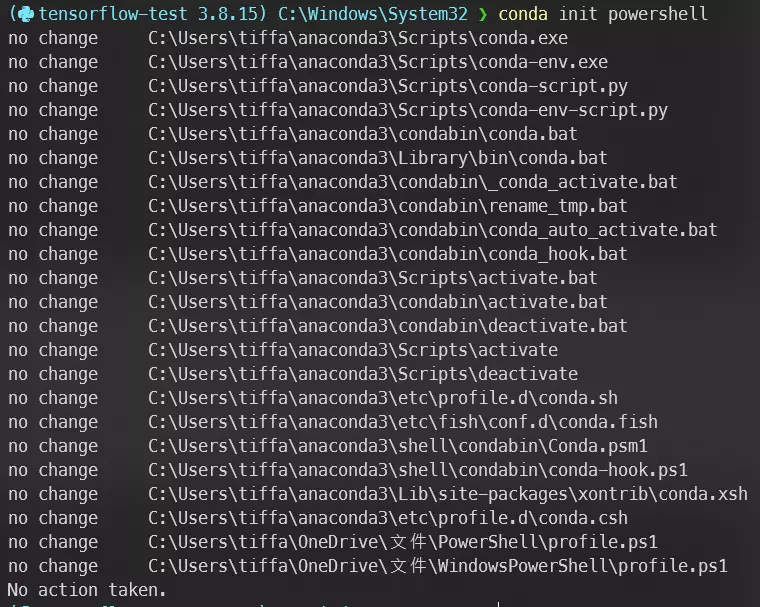

最近終於想要告別 Python 小白的身分，來好好的學學 machine learning 的部分（過了一學期依舊是一個沒用的專題仔），所以才在試著使用 conda。
這裡就記錄一下我今天使用到的指令。
環境
| OS | commandLine |
|---|---|
| Windows 10 | PowerShell 7.3.1 |
我本身的 PowerShell 有使用套件 Oh-My-Posh 來套用主題美化，所以可能會和大家電腦上看到的不太一樣。
使 PowerShell 能使用 Conda
在 PowerShell 中輸入指令：
1
conda init powershell
 執行起來大致上會長這樣
執行完再重啟 PowerShell 就可以了。
建立虛擬環境
利用
conda create來建立虛擬環境，並指定名字為tensorflow-test，Python 版本為 3.91
conda create --name tensorflow-test python=3.9
利用
conda env list查看當前有哪些虛擬環境1 2 3 4 5
(base 3.8.3) C:\Windows\System32 ❯ conda env list # conda environments: # base * C:\Users\tiffa\anaconda3 tensorflow-test C:\Users\tiffa\anaconda3\envs\tensorflow-test
使用
conda activate來進入虛擬環境tensorflow-test1
conda activate tensorflow-test
打開Jupyter Notebook
- 先用以下指令下載 Jupyter：
1 2
conda install jupyter conda install ipykernel
- 註冊一個名為
Tensorflow test的 Python 環境（這裡的名字主要是自己看著好辨識，沒什麼特別要求）1
python -m ipykernel install --user --name tensorflow-test --display-name "Tensorflow test"
- cd 到想打開 Jupyter 的資料夾
1
cd D:\Python\
- 打開 Jupyter
1
jupyter notebook
- 點擊右上角
New > Tensorflow test打開一個新的 notebook
其他 Jupyter 相關指令
- 查詢有哪些 Python 環境
1
jupyter kernelspec list
- 刪除環境
1
jupyter kernelspec remove <環境名稱>
更正 Python 版本
我在建立完虛擬環境後發現 Python 版本和 TensorFlow 要求的不一樣，需要中途更改版本為 Python 3.8：
1
conda install python=3.8
安裝完成後使用指令 python 來確認版本（雖然我的主題可以直接看到虛擬環境的版本就是了）
1
2
3
4
(tensorflow-test 3.8.15) C:\Windows\System32 ❯ python
Python 3.8.15 (default, Nov 24 2022, 14:38:14) [MSC v.1916 64 bit (AMD64)] :: Anaconda, Inc. on win32
Type "help", "copyright", "credits" or "license" for more information.
>>>
執行指令後的第一行可以看到我的版本變成 Python 3.8.15
結語
建立 Python 虛擬環境其實一點都不難，指令複製貼上就能解決了。